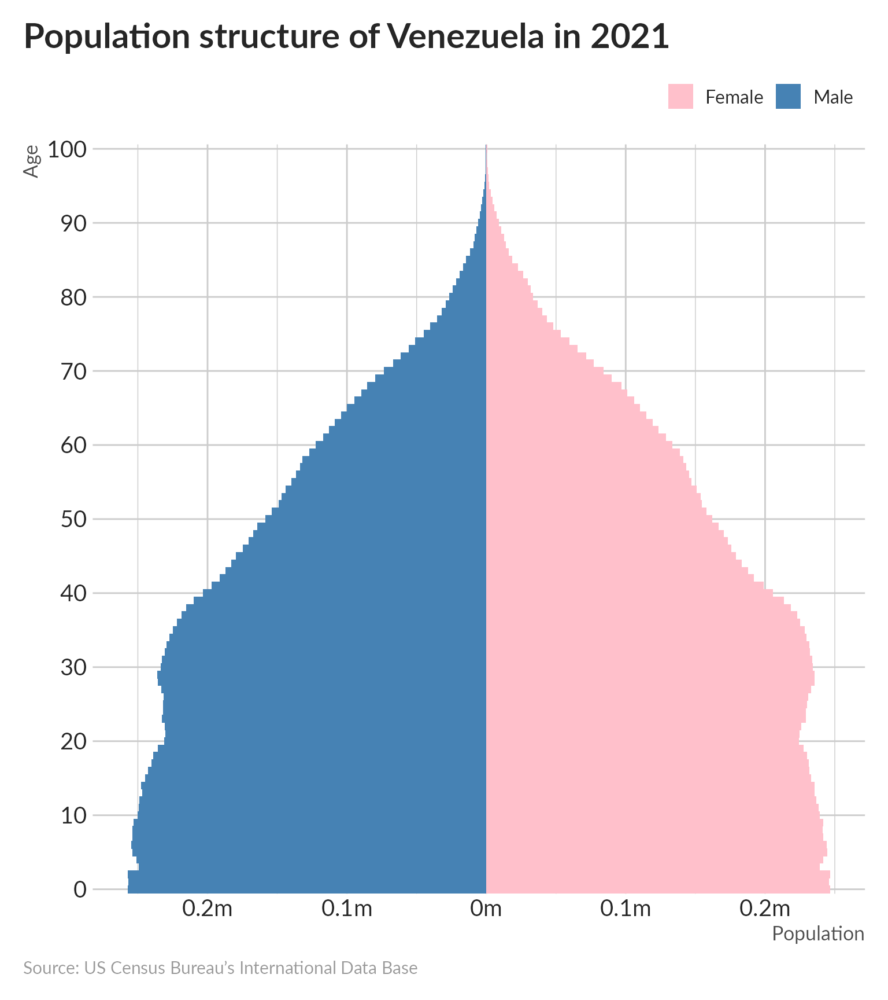

Note that you can find the source code for all the chart below in the Repository.
The US Census Bureau’s International Data Base (IDB) includes historical demographic data, current population estimates, and demographic projections to 2050 for countries of population 5,000 or greater that are recognized by the US Department of State (US Census Bureau 2013). Demographic indicators in the IDB include: mid-year population; population counts by sex and age; and fertility, mortality, and migration variables such as net migration, infant mortality rates, and total fertility rates. Future projections of these indicators are estimated using the cohort-component method (US Census Bureau 2013).
Data from the IDB are available via a web interface provided by the US Census Bureau at https://www.census.gov/population/international/data/idb/informationGateway.php, and also can be accessed programmatically via the IDB data application programming interface, or API. The idbr R package provides convenient functions for accessing IDB data within an R session, and converting the data to an R data frame for analysis and visualization. idbr is available on CRAN; R users can install the package with install.packages(‘idbr’).
Users of the Census APIs should request an API key, which is available from http://api.census.gov/data/key_signup.html. The idbr package requires R users to set their API keys prior to accessing the data. The API key can be set for an entire R session with the idb_api_key function:
We can then use such visualization in comparision with Age pyramid from other countries as offered by the idbr package.
